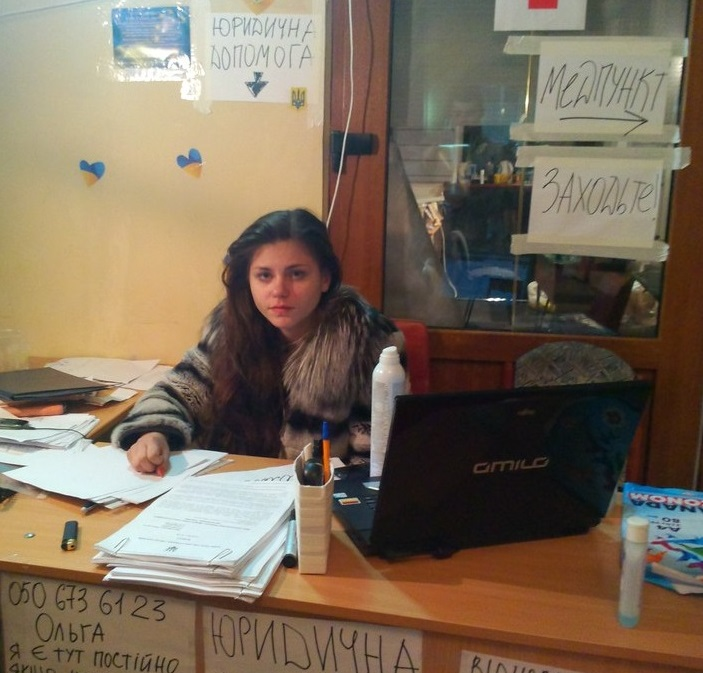

Проект потребує допомоги. Ми працюємо лише на ініціативі та бажанні
допомогти постраждалим на Майдані, проте у нас є мета створити мережу таких центрів допомоги, для цього
нам необхідні фінансові ресурси. Допомогти нам можна перерахувавши кошти на наші рахунки, які будуть викладені
протягом тижня, по проходженню поперації підтвердження.
